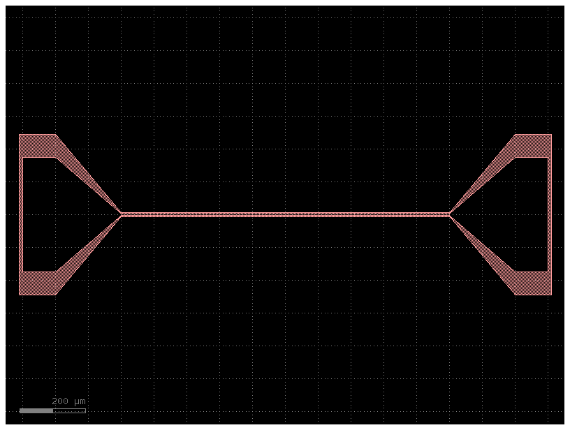
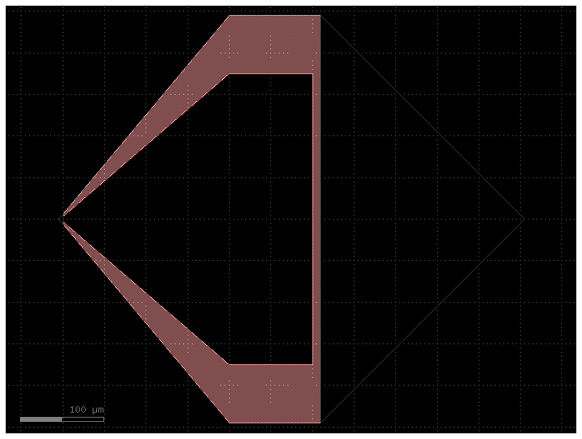
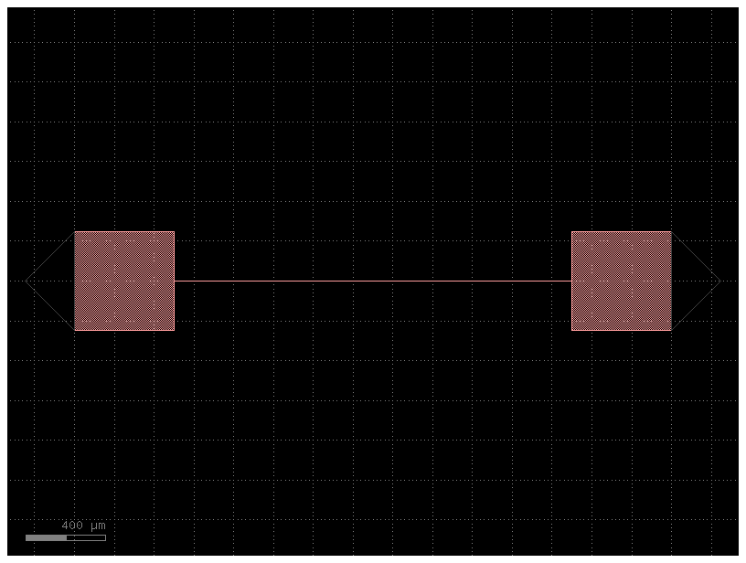

<!doctype html>
<html class="no-js" lang="en" data-content_root="">
  <head><meta charset="utf-8"/>
    <meta name="viewport" content="width=device-width,initial-scale=1"/>
    <meta name="color-scheme" content="light dark"><meta name="generator" content="Docutils 0.19: https://docutils.sourceforge.io/" />
<link rel="index" title="Index" href="../genindex.html" /><link rel="search" title="Search" href="../search.html" /><link rel="prev" title="qutegds package" href="qutegds.html" />

    <!-- Generated with Sphinx 6.2.1 and Furo 2023.09.10 -->
        <title>qutegds.components package - qutegds · 0.0.1</title>
      <link rel="stylesheet" type="text/css" href="../_static/pygments.css" />
    <link rel="stylesheet" type="text/css" href="../_static/styles/furo.css?digest=369552022d0b975c8e74270ce6eabe0fb7978f24" />
    <link rel="stylesheet" type="text/css" href="../_static/jupyter-sphinx.css" />
    <link rel="stylesheet" type="text/css" href="../_static/thebelab.css" />
    <link rel="stylesheet" type="text/css" href="../_static/copybutton.css" />
    <link rel="stylesheet" type="text/css" href="../_static/css/style.css" />
    <link rel="stylesheet" type="text/css" href="../_static/styles/furo-extensions.css?digest=30d1aed668e5c3a91c3e3bf6a60b675221979f0e" />
    
    


<style>
  body {
    --color-code-background: #f8f8f8;
  --color-code-foreground: black;
  --color-brand-primary: #6400FF;
  --color-brand-secondary: #6400FF;
  --color-brand-content: #6400FF;
  
  }
  @media not print {
    body[data-theme="dark"] {
      --color-code-background: #202020;
  --color-code-foreground: #d0d0d0;
  
    }
    @media (prefers-color-scheme: dark) {
      body:not([data-theme="light"]) {
        --color-code-background: #202020;
  --color-code-foreground: #d0d0d0;
  
      }
    }
  }
</style></head>
  <body>
    
    <script>
      document.body.dataset.theme = localStorage.getItem("theme") || "auto";
    </script>
    

<svg xmlns="http://www.w3.org/2000/svg" style="display: none;">
  <symbol id="svg-toc" viewBox="0 0 24 24">
    <title>Contents</title>
    <svg stroke="currentColor" fill="currentColor" stroke-width="0" viewBox="0 0 1024 1024">
      <path d="M408 442h480c4.4 0 8-3.6 8-8v-56c0-4.4-3.6-8-8-8H408c-4.4 0-8 3.6-8 8v56c0 4.4 3.6 8 8 8zm-8 204c0 4.4 3.6 8 8 8h480c4.4 0 8-3.6 8-8v-56c0-4.4-3.6-8-8-8H408c-4.4 0-8 3.6-8 8v56zm504-486H120c-4.4 0-8 3.6-8 8v56c0 4.4 3.6 8 8 8h784c4.4 0 8-3.6 8-8v-56c0-4.4-3.6-8-8-8zm0 632H120c-4.4 0-8 3.6-8 8v56c0 4.4 3.6 8 8 8h784c4.4 0 8-3.6 8-8v-56c0-4.4-3.6-8-8-8zM115.4 518.9L271.7 642c5.8 4.6 14.4.5 14.4-6.9V388.9c0-7.4-8.5-11.5-14.4-6.9L115.4 505.1a8.74 8.74 0 0 0 0 13.8z"/>
    </svg>
  </symbol>
  <symbol id="svg-menu" viewBox="0 0 24 24">
    <title>Menu</title>
    <svg xmlns="http://www.w3.org/2000/svg" viewBox="0 0 24 24" fill="none" stroke="currentColor"
      stroke-width="2" stroke-linecap="round" stroke-linejoin="round" class="feather-menu">
      <line x1="3" y1="12" x2="21" y2="12"></line>
      <line x1="3" y1="6" x2="21" y2="6"></line>
      <line x1="3" y1="18" x2="21" y2="18"></line>
    </svg>
  </symbol>
  <symbol id="svg-arrow-right" viewBox="0 0 24 24">
    <title>Expand</title>
    <svg xmlns="http://www.w3.org/2000/svg" viewBox="0 0 24 24" fill="none" stroke="currentColor"
      stroke-width="2" stroke-linecap="round" stroke-linejoin="round" class="feather-chevron-right">
      <polyline points="9 18 15 12 9 6"></polyline>
    </svg>
  </symbol>
  <symbol id="svg-sun" viewBox="0 0 24 24">
    <title>Light mode</title>
    <svg xmlns="http://www.w3.org/2000/svg" viewBox="0 0 24 24" fill="none" stroke="currentColor"
      stroke-width="1.5" stroke-linecap="round" stroke-linejoin="round" class="feather-sun">
      <circle cx="12" cy="12" r="5"></circle>
      <line x1="12" y1="1" x2="12" y2="3"></line>
      <line x1="12" y1="21" x2="12" y2="23"></line>
      <line x1="4.22" y1="4.22" x2="5.64" y2="5.64"></line>
      <line x1="18.36" y1="18.36" x2="19.78" y2="19.78"></line>
      <line x1="1" y1="12" x2="3" y2="12"></line>
      <line x1="21" y1="12" x2="23" y2="12"></line>
      <line x1="4.22" y1="19.78" x2="5.64" y2="18.36"></line>
      <line x1="18.36" y1="5.64" x2="19.78" y2="4.22"></line>
    </svg>
  </symbol>
  <symbol id="svg-moon" viewBox="0 0 24 24">
    <title>Dark mode</title>
    <svg xmlns="http://www.w3.org/2000/svg" viewBox="0 0 24 24" fill="none" stroke="currentColor"
      stroke-width="1.5" stroke-linecap="round" stroke-linejoin="round" class="icon-tabler-moon">
      <path stroke="none" d="M0 0h24v24H0z" fill="none" />
      <path d="M12 3c.132 0 .263 0 .393 0a7.5 7.5 0 0 0 7.92 12.446a9 9 0 1 1 -8.313 -12.454z" />
    </svg>
  </symbol>
  <symbol id="svg-sun-half" viewBox="0 0 24 24">
    <title>Auto light/dark mode</title>
    <svg xmlns="http://www.w3.org/2000/svg" viewBox="0 0 24 24" fill="none" stroke="currentColor"
      stroke-width="1.5" stroke-linecap="round" stroke-linejoin="round" class="icon-tabler-shadow">
      <path stroke="none" d="M0 0h24v24H0z" fill="none"/>
      <circle cx="12" cy="12" r="9" />
      <path d="M13 12h5" />
      <path d="M13 15h4" />
      <path d="M13 18h1" />
      <path d="M13 9h4" />
      <path d="M13 6h1" />
    </svg>
  </symbol>
</svg>

<input type="checkbox" class="sidebar-toggle" name="__navigation" id="__navigation">
<input type="checkbox" class="sidebar-toggle" name="__toc" id="__toc">
<label class="overlay sidebar-overlay" for="__navigation">
  <div class="visually-hidden">Hide navigation sidebar</div>
</label>
<label class="overlay toc-overlay" for="__toc">
  <div class="visually-hidden">Hide table of contents sidebar</div>
</label>


<div class="page">
  <header class="mobile-header">
    <div class="header-left">
      <label class="nav-overlay-icon" for="__navigation">
        <div class="visually-hidden">Toggle site navigation sidebar</div>
        <i class="icon"><svg><use href="#svg-menu"></use></svg></i>
      </label>
    </div>
    <div class="header-center">
      <a href="../index.html"><div class="brand">qutegds · 0.0.1</div></a>
    </div>
    <div class="header-right">
      <div class="theme-toggle-container theme-toggle-header">
        <button class="theme-toggle">
          <div class="visually-hidden">Toggle Light / Dark / Auto color theme</div>
          <svg class="theme-icon-when-auto"><use href="#svg-sun-half"></use></svg>
          <svg class="theme-icon-when-dark"><use href="#svg-moon"></use></svg>
          <svg class="theme-icon-when-light"><use href="#svg-sun"></use></svg>
        </button>
      </div>
      <label class="toc-overlay-icon toc-header-icon" for="__toc">
        <div class="visually-hidden">Toggle table of contents sidebar</div>
        <i class="icon"><svg><use href="#svg-toc"></use></svg></i>
      </label>
    </div>
  </header>
  <aside class="sidebar-drawer">
    <div class="sidebar-container">
      
      <div class="sidebar-sticky"><a class="sidebar-brand" href="../index.html">
  
  
  <span class="sidebar-brand-text">qutegds · 0.0.1</span>
  
</a><form class="sidebar-search-container" method="get" action="../search.html" role="search">
  <input class="sidebar-search" placeholder="Search" name="q" aria-label="Search">
  <input type="hidden" name="check_keywords" value="yes">
  <input type="hidden" name="area" value="default">
</form>
<div id="searchbox"></div><div class="sidebar-scroll"><div class="sidebar-tree">
  <p class="caption" role="heading"><span class="caption-text">Contents:</span></p>
<ul>
<li class="toctree-l1"><a class="reference internal" href="../installation.html">Installation</a></li>
</ul>
<p class="caption" role="heading"><span class="caption-text">Api reference</span></p>
<ul class="current">
<li class="toctree-l1 current has-children"><a class="reference internal" href="modules.html">qutegds</a><input checked="" class="toctree-checkbox" id="toctree-checkbox-1" name="toctree-checkbox-1" role="switch" type="checkbox"/><label for="toctree-checkbox-1"><div class="visually-hidden">Toggle navigation of qutegds</div><i class="icon"><svg><use href="#svg-arrow-right"></use></svg></i></label><ul class="current">
<li class="toctree-l2 current has-children"><a class="reference internal" href="qutegds.html">qutegds package</a><input checked="" class="toctree-checkbox" id="toctree-checkbox-2" name="toctree-checkbox-2" role="switch" type="checkbox"/><label for="toctree-checkbox-2"><div class="visually-hidden">Toggle navigation of qutegds package</div><i class="icon"><svg><use href="#svg-arrow-right"></use></svg></i></label><ul class="current">
<li class="toctree-l3 current current-page"><a class="current reference internal" href="#">qutegds.components package</a></li>
</ul>
</li>
</ul>
</li>
</ul>

</div>
</div>

      </div>
      
    </div>
  </aside>
  <div class="main">
    <div class="content">
      <div class="article-container">
        <a href="#" class="back-to-top muted-link">
          <svg xmlns="http://www.w3.org/2000/svg" viewBox="0 0 24 24">
            <path d="M13 20h-2V8l-5.5 5.5-1.42-1.42L12 4.16l7.92 7.92-1.42 1.42L13 8v12z"></path>
          </svg>
          <span>Back to top</span>
        </a>
        <div class="content-icon-container">
          <div class="edit-this-page">
  <a class="muted-link" href="https://github.com/twpalab/qutegds/edit/main/docs/source/api-reference/qutegds.components.rst" title="Edit this page">
    <svg aria-hidden="true" viewBox="0 0 24 24" stroke-width="1.5" stroke="currentColor" fill="none" stroke-linecap="round" stroke-linejoin="round">
      <path stroke="none" d="M0 0h24v24H0z" fill="none"/>
      <path d="M4 20h4l10.5 -10.5a1.5 1.5 0 0 0 -4 -4l-10.5 10.5v4" />
      <line x1="13.5" y1="6.5" x2="17.5" y2="10.5" />
    </svg>
    <span class="visually-hidden">Edit this page</span>
  </a>
</div><div class="theme-toggle-container theme-toggle-content">
            <button class="theme-toggle">
              <div class="visually-hidden">Toggle Light / Dark / Auto color theme</div>
              <svg class="theme-icon-when-auto"><use href="#svg-sun-half"></use></svg>
              <svg class="theme-icon-when-dark"><use href="#svg-moon"></use></svg>
              <svg class="theme-icon-when-light"><use href="#svg-sun"></use></svg>
            </button>
          </div>
          <label class="toc-overlay-icon toc-content-icon" for="__toc">
            <div class="visually-hidden">Toggle table of contents sidebar</div>
            <i class="icon"><svg><use href="#svg-toc"></use></svg></i>
          </label>
        </div>
        <article role="main">
          <section id="module-qutegds.components">
<span id="qutegds-components-package"></span><h1>qutegds.components package<a class="headerlink" href="#module-qutegds.components" title="Permalink to this heading">#</a></h1>
<p>Components package.</p>
<section id="submodules">
<h2>Submodules<a class="headerlink" href="#submodules" title="Permalink to this heading">#</a></h2>
</section>
<section id="module-qutegds.components.chip_layout">
<span id="qutegds-components-chip-layout-module"></span><h2>qutegds.components.chip_layout module<a class="headerlink" href="#module-qutegds.components.chip_layout" title="Permalink to this heading">#</a></h2>
<p>Components to mark or draw the chip boundaries.</p>
<span class="target" id="module-chip_layout.py"></span><dl class="py function">
<dt class="sig sig-object py" id="qutegds.components.chip_layout.centered_chip">
<span class="sig-prename descclassname"><span class="pre">qutegds.components.chip_layout.</span></span><span class="sig-name descname"><span class="pre">centered_chip</span></span><span class="sig-paren">(</span><em class="sig-param"><span class="pre">center_comp:</span> <span class="pre">str</span> <span class="pre">|</span> <span class="pre">~collections.abc.Callable[[...],</span> <span class="pre">~gdsfactory.component.Component]</span> <span class="pre">|</span> <span class="pre">~gdsfactory.component.Component</span> <span class="pre">|</span> <span class="pre">dict[str,</span> <span class="pre">typing.Any]</span> <span class="pre">=</span> <span class="pre">&lt;function</span> <span class="pre">stripes_array&gt;,</span> <span class="pre">size:</span> <span class="pre">tuple</span> <span class="pre">=</span> <span class="pre">(20000.0,</span> <span class="pre">20000.0),</span> <span class="pre">layer:</span> <span class="pre">tuple[int,</span> <span class="pre">int]</span> <span class="pre">|</span> <span class="pre">str</span> <span class="pre">=</span> <span class="pre">(2,</span> <span class="pre">0),</span> <span class="pre">negative:</span> <span class="pre">bool</span> <span class="pre">=</span> <span class="pre">False,</span> <span class="pre">**chip_kwargs</span></em><span class="sig-paren">)</span> <span class="sig-return"><span class="sig-return-icon">&#x2192;</span> <span class="sig-return-typehint"><span class="pre">Component</span></span></span><a class="reference internal" href="../_modules/qutegds/components/chip_layout.html#centered_chip"><span class="viewcode-link"><span class="pre">[source]</span></span></a><a class="headerlink" href="#qutegds.components.chip_layout.centered_chip" title="Permalink to this definition">#</a></dt>
<dd><p>Return chip with centered component.</p>
<dl class="field-list simple">
<dt class="field-odd">Parameters<span class="colon">:</span></dt>
<dd class="field-odd"><ul class="simple">
<li><p><strong>array</strong> (<a class="reference external" href="https://docs.python.org/3/library/functions.html#float" title="(in Python v3.12)"><em>float</em></a>) – ComponentSpec: component to be centered</p></li>
<li><p><strong>tuple</strong> (<em>size</em>) – chip size</p></li>
<li><p><strong>layer</strong> (<em>LayerSpec</em>) – chip layer</p></li>
<li><p><strong>negative</strong> (<a class="reference external" href="https://docs.python.org/3/library/functions.html#bool" title="(in Python v3.12)"><em>bool</em></a>) – return difference between component and chip as top layer.</p></li>
</ul>
</dd>
</dl>
</dd></dl>

<dl class="py function">
<dt class="sig sig-object py" id="qutegds.components.chip_layout.chip_title">
<span class="sig-prename descclassname"><span class="pre">qutegds.components.chip_layout.</span></span><span class="sig-name descname"><span class="pre">chip_title</span></span><span class="sig-paren">(</span><em class="sig-param"><span class="n"><span class="pre">title</span></span><span class="p"><span class="pre">:</span></span><span class="w"> </span><span class="n"><a class="reference external" href="https://docs.python.org/3/library/stdtypes.html#str" title="(in Python v3.12)"><span class="pre">str</span></a></span><span class="w"> </span><span class="o"><span class="pre">=</span></span><span class="w"> </span><span class="default_value"><span class="pre">'TITLE'</span></span></em>, <em class="sig-param"><span class="n"><span class="pre">length</span></span><span class="p"><span class="pre">:</span></span><span class="w"> </span><span class="n"><a class="reference external" href="https://docs.python.org/3/library/functions.html#float" title="(in Python v3.12)"><span class="pre">float</span></a></span><span class="w"> </span><span class="o"><span class="pre">=</span></span><span class="w"> </span><span class="default_value"><span class="pre">12000.0</span></span></em>, <em class="sig-param"><span class="n"><span class="pre">width</span></span><span class="p"><span class="pre">:</span></span><span class="w"> </span><span class="n"><a class="reference external" href="https://docs.python.org/3/library/functions.html#float" title="(in Python v3.12)"><span class="pre">float</span></a></span><span class="w"> </span><span class="o"><span class="pre">=</span></span><span class="w"> </span><span class="default_value"><span class="pre">500</span></span></em>, <em class="sig-param"><span class="n"><span class="pre">border_left</span></span><span class="p"><span class="pre">:</span></span><span class="w"> </span><span class="n"><a class="reference external" href="https://docs.python.org/3/library/functions.html#float" title="(in Python v3.12)"><span class="pre">float</span></a></span><span class="w"> </span><span class="o"><span class="pre">=</span></span><span class="w"> </span><span class="default_value"><span class="pre">30</span></span></em>, <em class="sig-param"><span class="n"><span class="pre">border_top</span></span><span class="p"><span class="pre">:</span></span><span class="w"> </span><span class="n"><a class="reference external" href="https://docs.python.org/3/library/functions.html#float" title="(in Python v3.12)"><span class="pre">float</span></a></span><span class="w"> </span><span class="o"><span class="pre">=</span></span><span class="w"> </span><span class="default_value"><span class="pre">10</span></span></em>, <em class="sig-param"><span class="n"><span class="pre">border_title</span></span><span class="p"><span class="pre">:</span></span><span class="w"> </span><span class="n"><a class="reference external" href="https://docs.python.org/3/library/functions.html#float" title="(in Python v3.12)"><span class="pre">float</span></a></span><span class="w"> </span><span class="o"><span class="pre">=</span></span><span class="w"> </span><span class="default_value"><span class="pre">100</span></span></em><span class="sig-paren">)</span> <span class="sig-return"><span class="sig-return-icon">&#x2192;</span> <span class="sig-return-typehint"><span class="pre">Component</span></span></span><a class="reference internal" href="../_modules/qutegds/components/chip_layout.html#chip_title"><span class="viewcode-link"><span class="pre">[source]</span></span></a><a class="headerlink" href="#qutegds.components.chip_layout.chip_title" title="Permalink to this definition">#</a></dt>
<dd><p>Return rectangle strip with padded title.</p>
<dl class="field-list simple">
<dt class="field-odd">Parameters<span class="colon">:</span></dt>
<dd class="field-odd"><ul class="simple">
<li><p><strong>title</strong> (<a class="reference external" href="https://docs.python.org/3/library/stdtypes.html#str" title="(in Python v3.12)"><em>str</em></a>) – title to be plotted</p></li>
<li><p><strong>length</strong> (<a class="reference external" href="https://docs.python.org/3/library/functions.html#float" title="(in Python v3.12)"><em>float</em></a>) – length of the top bar</p></li>
<li><p><strong>width</strong> (<a class="reference external" href="https://docs.python.org/3/library/functions.html#float" title="(in Python v3.12)"><em>float</em></a>) – width of the top bar</p></li>
<li><p><strong>border_left</strong> (<a class="reference external" href="https://docs.python.org/3/library/functions.html#float" title="(in Python v3.12)"><em>float</em></a>) – fill left border of title</p></li>
<li><p><strong>border_top</strong> (<a class="reference external" href="https://docs.python.org/3/library/functions.html#float" title="(in Python v3.12)"><em>float</em></a>) – fill top border of title</p></li>
<li><p><strong>border_title</strong> (<a class="reference external" href="https://docs.python.org/3/library/functions.html#float" title="(in Python v3.12)"><em>float</em></a>) – space around title</p></li>
</ul>
</dd>
</dl>
</dd></dl>

<dl class="py function">
<dt class="sig sig-object py" id="qutegds.components.chip_layout.squares_at_corner_chip">
<span class="sig-prename descclassname"><span class="pre">qutegds.components.chip_layout.</span></span><span class="sig-name descname"><span class="pre">squares_at_corner_chip</span></span><span class="sig-paren">(</span><em class="sig-param"><span class="pre">center_comp:</span> <span class="pre">str</span> <span class="pre">|</span> <span class="pre">~collections.abc.Callable[[...],</span> <span class="pre">~gdsfactory.component.Component]</span> <span class="pre">|</span> <span class="pre">~gdsfactory.component.Component</span> <span class="pre">|</span> <span class="pre">dict[str,</span> <span class="pre">typing.Any]</span> <span class="pre">=</span> <span class="pre">&lt;function</span> <span class="pre">stripes_array&gt;,</span> <span class="pre">size:</span> <span class="pre">tuple</span> <span class="pre">=</span> <span class="pre">(20000.0,</span> <span class="pre">20000.0),</span> <span class="pre">square_size:</span> <span class="pre">float</span> <span class="pre">=</span> <span class="pre">500,</span> <span class="pre">layer:</span> <span class="pre">tuple[int,</span> <span class="pre">int]</span> <span class="pre">|</span> <span class="pre">str</span> <span class="pre">=</span> <span class="pre">(2,</span> <span class="pre">0),</span> <span class="pre">**chip_kwargs</span></em><span class="sig-paren">)</span> <span class="sig-return"><span class="sig-return-icon">&#x2192;</span> <span class="sig-return-typehint"><span class="pre">Component</span></span></span><a class="reference internal" href="../_modules/qutegds/components/chip_layout.html#squares_at_corner_chip"><span class="viewcode-link"><span class="pre">[source]</span></span></a><a class="headerlink" href="#qutegds.components.chip_layout.squares_at_corner_chip" title="Permalink to this definition">#</a></dt>
<dd><p>Return chip marked by squares with centered component.</p>
<dl class="field-list simple">
<dt class="field-odd">Parameters<span class="colon">:</span></dt>
<dd class="field-odd"><ul class="simple">
<li><p><strong>array</strong> (<a class="reference external" href="https://docs.python.org/3/library/functions.html#float" title="(in Python v3.12)"><em>float</em></a>) – ComponentSpec: component to be centered</p></li>
<li><p><strong>tuple</strong> (<em>size</em>) – chip size</p></li>
<li><p><strong>square_size</strong> (<a class="reference external" href="https://docs.python.org/3/library/functions.html#float" title="(in Python v3.12)"><em>float</em></a>) – length of the squares’ sides</p></li>
<li><p><strong>layer</strong> (<em>LayerSpec</em>) – chip layer</p></li>
</ul>
</dd>
</dl>
</dd></dl>

</section>
<section id="module-qutegds.components.cpw_base">
<span id="qutegds-components-cpw-base-module"></span><h2>qutegds.components.cpw_base module<a class="headerlink" href="#module-qutegds.components.cpw_base" title="Permalink to this heading">#</a></h2>
<p>List of coplanar waveguide elements.</p>
<dl class="py function">
<dt class="sig sig-object py" id="qutegds.components.cpw_base.cpw">
<span class="sig-prename descclassname"><span class="pre">qutegds.components.cpw_base.</span></span><span class="sig-name descname"><span class="pre">cpw</span></span><span class="sig-paren">(</span><em class="sig-param"><span class="n"><span class="pre">component_name</span></span><span class="p"><span class="pre">:</span></span><span class="w"> </span><span class="n"><a class="reference external" href="https://docs.python.org/3/library/stdtypes.html#str" title="(in Python v3.12)"><span class="pre">str</span></a></span><span class="w"> </span><span class="o"><span class="pre">=</span></span><span class="w"> </span><span class="default_value"><span class="pre">'straight'</span></span></em>, <em class="sig-param"><span class="n"><span class="pre">gap</span></span><span class="p"><span class="pre">:</span></span><span class="w"> </span><span class="n"><a class="reference external" href="https://docs.python.org/3/library/functions.html#float" title="(in Python v3.12)"><span class="pre">float</span></a></span><span class="w"> </span><span class="o"><span class="pre">=</span></span><span class="w"> </span><span class="default_value"><span class="pre">3</span></span></em>, <em class="sig-param"><span class="n"><span class="pre">width</span></span><span class="p"><span class="pre">:</span></span><span class="w"> </span><span class="n"><a class="reference external" href="https://docs.python.org/3/library/functions.html#float" title="(in Python v3.12)"><span class="pre">float</span></a></span><span class="w"> </span><span class="o"><span class="pre">=</span></span><span class="w"> </span><span class="default_value"><span class="pre">6</span></span></em>, <em class="sig-param"><span class="o"><span class="pre">**</span></span><span class="n"><span class="pre">kwargs</span></span></em><span class="sig-paren">)</span> <span class="sig-return"><span class="sig-return-icon">&#x2192;</span> <span class="sig-return-typehint"><span class="pre">Component</span></span></span><a class="reference internal" href="../_modules/qutegds/components/cpw_base.html#cpw"><span class="viewcode-link"><span class="pre">[source]</span></span></a><a class="headerlink" href="#qutegds.components.cpw_base.cpw" title="Permalink to this definition">#</a></dt>
<dd><p>Return simple coplanar waveguide from single component.</p>
<p>By default, returns negative mask of the CPW trace.</p>
<dl class="field-list simple">
<dt class="field-odd">Parameters<span class="colon">:</span></dt>
<dd class="field-odd"><ul class="simple">
<li><p><strong>component_name</strong> (<a class="reference external" href="https://docs.python.org/3/library/stdtypes.html#str" title="(in Python v3.12)"><em>str</em></a>) – name of the component to be used</p></li>
<li><p><strong>width</strong> (<a class="reference external" href="https://docs.python.org/3/library/functions.html#float" title="(in Python v3.12)"><em>float</em></a>) – width of the central CPW trace</p></li>
<li><p><strong>gap</strong> (<a class="reference external" href="https://docs.python.org/3/library/functions.html#float" title="(in Python v3.12)"><em>float</em></a>) – space in um between the CPW trace and ground</p></li>
</ul>
</dd>
</dl>
</dd></dl>

<dl class="py function">
<dt class="sig sig-object py" id="qutegds.components.cpw_base.cpw_with_ports">
<span class="sig-prename descclassname"><span class="pre">qutegds.components.cpw_base.</span></span><span class="sig-name descname"><span class="pre">cpw_with_ports</span></span><span class="sig-paren">(</span><em class="sig-param"><span class="pre">gap:</span> <span class="pre">float</span> <span class="pre">=</span> <span class="pre">3,</span> <span class="pre">width:</span> <span class="pre">float</span> <span class="pre">=</span> <span class="pre">6,</span> <span class="pre">length:</span> <span class="pre">float</span> <span class="pre">=</span> <span class="pre">1000,</span> <span class="pre">straight:</span> <span class="pre">~collections.abc.Callable[[...],</span> <span class="pre">~gdsfactory.component.Component]</span> <span class="pre">=</span> <span class="pre">&lt;function</span> <span class="pre">cpw&gt;,</span> <span class="pre">launcher:</span> <span class="pre">~collections.abc.Callable[[...],</span> <span class="pre">~gdsfactory.component.Component]</span> <span class="pre">=</span> <span class="pre">&lt;function</span> <span class="pre">rf_port&gt;</span></em><span class="sig-paren">)</span> <span class="sig-return"><span class="sig-return-icon">&#x2192;</span> <span class="sig-return-typehint"><span class="pre">Component</span></span></span><a class="reference internal" href="../_modules/qutegds/components/cpw_base.html#cpw_with_ports"><span class="viewcode-link"><span class="pre">[source]</span></span></a><a class="headerlink" href="#qutegds.components.cpw_base.cpw_with_ports" title="Permalink to this definition">#</a></dt>
<dd><p>CPW with ports at extremities.</p>
<p>gap (float): gap of the cpw line
width (float): width of the cpw line
length (float): length of the cpw line
straight (ComponentFactory): cpw component
launcher (ComponentFactory): port component</p>
<div class="jupyter_cell jupyter_container docutils container">
<div class="cell_input code_cell docutils container">
<div class="highlight-ipython3 notranslate"><div class="highlight"><pre><span></span><span class="kn">from</span> <span class="nn">qutegds</span> <span class="kn">import</span> <span class="n">cpw_with_ports</span>
<span class="n">c</span> <span class="o">=</span> <span class="n">cpw_with_ports</span><span class="p">()</span>
<span class="n">c</span><span class="o">.</span><span class="n">plot</span><span class="p">()</span>
</pre></div>
</div>
</div>
<div class="cell_output docutils container">
<div class="output stream highlight-none notranslate"><div class="highlight"><pre><span></span>2024-05-17 20:32:37.791 | INFO     | gdsfactory.pdk:activate:309 - &#39;qute&#39; PDK is now active
</pre></div>
</div>

</div>
</div>
</dd></dl>

<dl class="py function">
<dt class="sig sig-object py" id="qutegds.components.cpw_base.rf_port">
<span class="sig-prename descclassname"><span class="pre">qutegds.components.cpw_base.</span></span><span class="sig-name descname"><span class="pre">rf_port</span></span><span class="sig-paren">(</span><em class="sig-param"><span class="n"><span class="pre">width1</span></span><span class="p"><span class="pre">:</span></span><span class="w"> </span><span class="n"><a class="reference external" href="https://docs.python.org/3/library/functions.html#float" title="(in Python v3.12)"><span class="pre">float</span></a></span><span class="w"> </span><span class="o"><span class="pre">=</span></span><span class="w"> </span><span class="default_value"><span class="pre">6</span></span></em>, <em class="sig-param"><span class="n"><span class="pre">width2</span></span><span class="p"><span class="pre">:</span></span><span class="w"> </span><span class="n"><a class="reference external" href="https://docs.python.org/3/library/functions.html#float" title="(in Python v3.12)"><span class="pre">float</span></a></span><span class="w"> </span><span class="o"><span class="pre">=</span></span><span class="w"> </span><span class="default_value"><span class="pre">350</span></span></em>, <em class="sig-param"><span class="n"><span class="pre">gap1</span></span><span class="p"><span class="pre">:</span></span><span class="w"> </span><span class="n"><a class="reference external" href="https://docs.python.org/3/library/functions.html#float" title="(in Python v3.12)"><span class="pre">float</span></a></span><span class="w"> </span><span class="o"><span class="pre">=</span></span><span class="w"> </span><span class="default_value"><span class="pre">3</span></span></em>, <em class="sig-param"><span class="n"><span class="pre">gap2</span></span><span class="p"><span class="pre">:</span></span><span class="w"> </span><span class="n"><a class="reference external" href="https://docs.python.org/3/library/functions.html#float" title="(in Python v3.12)"><span class="pre">float</span></a></span><span class="w"> </span><span class="o"><span class="pre">=</span></span><span class="w"> </span><span class="default_value"><span class="pre">70</span></span></em>, <em class="sig-param"><span class="n"><span class="pre">len_taper</span></span><span class="p"><span class="pre">:</span></span><span class="w"> </span><span class="n"><a class="reference external" href="https://docs.python.org/3/library/functions.html#float" title="(in Python v3.12)"><span class="pre">float</span></a></span><span class="w"> </span><span class="o"><span class="pre">=</span></span><span class="w"> </span><span class="default_value"><span class="pre">200</span></span></em>, <em class="sig-param"><span class="n"><span class="pre">len_rect</span></span><span class="p"><span class="pre">:</span></span><span class="w"> </span><span class="n"><a class="reference external" href="https://docs.python.org/3/library/functions.html#float" title="(in Python v3.12)"><span class="pre">float</span></a></span><span class="w"> </span><span class="o"><span class="pre">=</span></span><span class="w"> </span><span class="default_value"><span class="pre">100</span></span></em>, <em class="sig-param"><span class="n"><span class="pre">space_pad</span></span><span class="p"><span class="pre">:</span></span><span class="w"> </span><span class="n"><a class="reference external" href="https://docs.python.org/3/library/functions.html#float" title="(in Python v3.12)"><span class="pre">float</span></a></span><span class="w"> </span><span class="o"><span class="pre">=</span></span><span class="w"> </span><span class="default_value"><span class="pre">10</span></span></em>, <em class="sig-param"><span class="o"><span class="pre">**</span></span><span class="n"><span class="pre">kwargs</span></span></em><span class="sig-paren">)</span> <span class="sig-return"><span class="sig-return-icon">&#x2192;</span> <span class="sig-return-typehint"><span class="pre">Component</span></span></span><a class="reference internal" href="../_modules/qutegds/components/cpw_base.html#rf_port"><span class="viewcode-link"><span class="pre">[source]</span></span></a><a class="headerlink" href="#qutegds.components.cpw_base.rf_port" title="Permalink to this definition">#</a></dt>
<dd><p>Return rf port.</p>
<dl class="field-list simple">
<dt class="field-odd">Parameters<span class="colon">:</span></dt>
<dd class="field-odd"><ul class="simple">
<li><p><strong>width1</strong> (<a class="reference external" href="https://docs.python.org/3/library/functions.html#float" title="(in Python v3.12)"><em>float</em></a>) – width of the connection to the cpw</p></li>
<li><p><strong>width2</strong> (<a class="reference external" href="https://docs.python.org/3/library/functions.html#float" title="(in Python v3.12)"><em>float</em></a>) – width of the port at the beginning</p></li>
<li><p><strong>gap1</strong> (<a class="reference external" href="https://docs.python.org/3/library/functions.html#float" title="(in Python v3.12)"><em>float</em></a>) – gap of the final cpw</p></li>
<li><p><strong>gap2</strong> (<a class="reference external" href="https://docs.python.org/3/library/functions.html#float" title="(in Python v3.12)"><em>float</em></a>) – gap of the bonding pad</p></li>
<li><p><strong>len_taper</strong> (<a class="reference external" href="https://docs.python.org/3/library/functions.html#float" title="(in Python v3.12)"><em>float</em></a>) – length of the</p></li>
<li><p><strong>len_rect</strong> (<a class="reference external" href="https://docs.python.org/3/library/functions.html#float" title="(in Python v3.12)"><em>float</em></a>) – length of the bonding pad</p></li>
<li><p><strong>space_pad</strong> (<a class="reference external" href="https://docs.python.org/3/library/functions.html#float" title="(in Python v3.12)"><em>float</em></a>) – gap at the side of the bonding pad</p></li>
</ul>
</dd>
</dl>
<div class="jupyter_cell jupyter_container docutils container">
<div class="cell_input code_cell docutils container">
<div class="highlight-ipython3 notranslate"><div class="highlight"><pre><span></span><span class="kn">from</span> <span class="nn">qutegds</span> <span class="kn">import</span> <span class="n">rf_port</span>
<span class="n">c</span> <span class="o">=</span> <span class="n">rf_port</span><span class="p">()</span>
<span class="n">c</span><span class="o">.</span><span class="n">plot</span><span class="p">()</span>
</pre></div>
</div>
</div>
<div class="cell_output docutils container">

</div>
</div>
</dd></dl>

<dl class="py function">
<dt class="sig sig-object py" id="qutegds.components.cpw_base.snake">
<span class="sig-prename descclassname"><span class="pre">qutegds.components.cpw_base.</span></span><span class="sig-name descname"><span class="pre">snake</span></span><span class="sig-paren">(</span><em class="sig-param"><span class="o"><span class="pre">*</span></span></em>, <em class="sig-param"><span class="n"><span class="pre">component_name</span></span><span class="p"><span class="pre">:</span></span><span class="w"> </span><span class="n"><a class="reference external" href="https://docs.python.org/3/library/stdtypes.html#str" title="(in Python v3.12)"><span class="pre">str</span></a></span><span class="w"> </span><span class="o"><span class="pre">=</span></span><span class="w"> </span><span class="default_value"><span class="pre">'delay_snake'</span></span></em>, <em class="sig-param"><span class="n"><span class="pre">gap</span></span><span class="p"><span class="pre">:</span></span><span class="w"> </span><span class="n"><a class="reference external" href="https://docs.python.org/3/library/functions.html#float" title="(in Python v3.12)"><span class="pre">float</span></a></span><span class="w"> </span><span class="o"><span class="pre">=</span></span><span class="w"> </span><span class="default_value"><span class="pre">3</span></span></em>, <em class="sig-param"><span class="n"><span class="pre">width</span></span><span class="p"><span class="pre">:</span></span><span class="w"> </span><span class="n"><a class="reference external" href="https://docs.python.org/3/library/functions.html#float" title="(in Python v3.12)"><span class="pre">float</span></a></span><span class="w"> </span><span class="o"><span class="pre">=</span></span><span class="w"> </span><span class="default_value"><span class="pre">6</span></span></em>, <em class="sig-param"><span class="o"><span class="pre">**</span></span><span class="n"><span class="pre">kwargs</span></span></em><span class="sig-paren">)</span> <span class="sig-return"><span class="sig-return-icon">&#x2192;</span> <span class="sig-return-typehint"><span class="pre">Component</span></span></span><a class="headerlink" href="#qutegds.components.cpw_base.snake" title="Permalink to this definition">#</a></dt>
<dd><p>Return simple coplanar waveguide from single component.</p>
<p>By default, returns negative mask of the CPW trace.</p>
<dl class="field-list simple">
<dt class="field-odd">Parameters<span class="colon">:</span></dt>
<dd class="field-odd"><ul class="simple">
<li><p><strong>component_name</strong> (<a class="reference external" href="https://docs.python.org/3/library/stdtypes.html#str" title="(in Python v3.12)"><em>str</em></a>) – name of the component to be used</p></li>
<li><p><strong>width</strong> (<a class="reference external" href="https://docs.python.org/3/library/functions.html#float" title="(in Python v3.12)"><em>float</em></a>) – width of the central CPW trace</p></li>
<li><p><strong>gap</strong> (<a class="reference external" href="https://docs.python.org/3/library/functions.html#float" title="(in Python v3.12)"><em>float</em></a>) – space in um between the CPW trace and ground</p></li>
</ul>
</dd>
</dl>
</dd></dl>

<dl class="py function">
<dt class="sig sig-object py" id="qutegds.components.cpw_base.straight_taper">
<span class="sig-prename descclassname"><span class="pre">qutegds.components.cpw_base.</span></span><span class="sig-name descname"><span class="pre">straight_taper</span></span><span class="sig-paren">(</span><em class="sig-param"><span class="pre">straight:</span> <span class="pre">str</span> <span class="pre">|</span> <span class="pre">~collections.abc.Callable[[...],</span> <span class="pre">~gdsfactory.component.Component]</span> <span class="pre">|</span> <span class="pre">~gdsfactory.component.Component</span> <span class="pre">|</span> <span class="pre">dict[str,</span> <span class="pre">typing.Any]</span> <span class="pre">=</span> <span class="pre">&lt;function</span> <span class="pre">straight&gt;,</span> <span class="pre">taper:</span> <span class="pre">~collections.abc.Callable[[...],</span> <span class="pre">~gdsfactory.component.Component]</span> <span class="pre">=</span> <span class="pre">&lt;function</span> <span class="pre">taper&gt;</span></em><span class="sig-paren">)</span> <span class="sig-return"><span class="sig-return-icon">&#x2192;</span> <span class="sig-return-typehint"><span class="pre">Component</span></span></span><a class="reference internal" href="../_modules/qutegds/components/cpw_base.html#straight_taper"><span class="viewcode-link"><span class="pre">[source]</span></span></a><a class="headerlink" href="#qutegds.components.cpw_base.straight_taper" title="Permalink to this definition">#</a></dt>
<dd><p>Return straight section connected with taper.</p>
<dl class="field-list simple">
<dt class="field-odd">Parameters<span class="colon">:</span></dt>
<dd class="field-odd"><ul class="simple">
<li><p><strong>straight</strong> (<em>ComponentSpec</em>) – straight section of the component</p></li>
<li><p><strong>taper</strong> (<em>ComponentFactory</em>) – trapezoid section of the component</p></li>
</ul>
</dd>
</dl>
</dd></dl>

</section>
<section id="module-qutegds.components.resonator">
<span id="qutegds-components-resonator-module"></span><h2>qutegds.components.resonator module<a class="headerlink" href="#module-qutegds.components.resonator" title="Permalink to this heading">#</a></h2>
<p>resonator module.</p>
<dl class="py function">
<dt class="sig sig-object py" id="qutegds.components.resonator.resonator">
<span class="sig-prename descclassname"><span class="pre">qutegds.components.resonator.</span></span><span class="sig-name descname"><span class="pre">resonator</span></span><span class="sig-paren">(</span><em class="sig-param"><span class="n"><span class="pre">length</span></span><span class="p"><span class="pre">:</span></span><span class="w"> </span><span class="n"><a class="reference external" href="https://docs.python.org/3/library/functions.html#float" title="(in Python v3.12)"><span class="pre">float</span></a></span><span class="w"> </span><span class="o"><span class="pre">=</span></span><span class="w"> </span><span class="default_value"><span class="pre">400.0</span></span></em>, <em class="sig-param"><span class="n"><span class="pre">L0</span></span><span class="p"><span class="pre">:</span></span><span class="w"> </span><span class="n"><a class="reference external" href="https://docs.python.org/3/library/functions.html#float" title="(in Python v3.12)"><span class="pre">float</span></a></span><span class="w"> </span><span class="o"><span class="pre">=</span></span><span class="w"> </span><span class="default_value"><span class="pre">30.0</span></span></em>, <em class="sig-param"><span class="n"><span class="pre">n</span></span><span class="p"><span class="pre">:</span></span><span class="w"> </span><span class="n"><a class="reference external" href="https://docs.python.org/3/library/functions.html#int" title="(in Python v3.12)"><span class="pre">int</span></a></span><span class="w"> </span><span class="o"><span class="pre">=</span></span><span class="w"> </span><span class="default_value"><span class="pre">1</span></span></em>, <em class="sig-param"><span class="n"><span class="pre">width</span></span><span class="p"><span class="pre">:</span></span><span class="w"> </span><span class="n"><a class="reference external" href="https://docs.python.org/3/library/functions.html#float" title="(in Python v3.12)"><span class="pre">float</span></a></span><span class="w"> </span><span class="o"><span class="pre">=</span></span><span class="w"> </span><span class="default_value"><span class="pre">2</span></span></em>, <em class="sig-param"><span class="n"><span class="pre">dy</span></span><span class="p"><span class="pre">:</span></span><span class="w"> </span><span class="n"><a class="reference external" href="https://docs.python.org/3/library/functions.html#float" title="(in Python v3.12)"><span class="pre">float</span></a></span><span class="w"> </span><span class="o"><span class="pre">=</span></span><span class="w"> </span><span class="default_value"><span class="pre">15</span></span></em>, <em class="sig-param"><span class="n"><span class="pre">dx</span></span><span class="p"><span class="pre">:</span></span><span class="w"> </span><span class="n"><a class="reference external" href="https://docs.python.org/3/library/functions.html#float" title="(in Python v3.12)"><span class="pre">float</span></a></span><span class="w"> </span><span class="o"><span class="pre">=</span></span><span class="w"> </span><span class="default_value"><span class="pre">40</span></span></em>, <em class="sig-param"><span class="n"><span class="pre">dc</span></span><span class="p"><span class="pre">:</span></span><span class="w"> </span><span class="n"><a class="reference external" href="https://docs.python.org/3/library/functions.html#float" title="(in Python v3.12)"><span class="pre">float</span></a></span><span class="w"> </span><span class="o"><span class="pre">=</span></span><span class="w"> </span><span class="default_value"><span class="pre">5</span></span></em>, <em class="sig-param"><span class="n"><span class="pre">radius</span></span><span class="p"><span class="pre">:</span></span><span class="w"> </span><span class="n"><a class="reference external" href="https://docs.python.org/3/library/functions.html#float" title="(in Python v3.12)"><span class="pre">float</span></a></span><span class="w"> </span><span class="o"><span class="pre">=</span></span><span class="w"> </span><span class="default_value"><span class="pre">10</span></span></em>, <em class="sig-param"><span class="n"><span class="pre">p</span></span><span class="p"><span class="pre">:</span></span><span class="w"> </span><span class="n"><a class="reference external" href="https://docs.python.org/3/library/functions.html#float" title="(in Python v3.12)"><span class="pre">float</span></a></span><span class="w"> </span><span class="o"><span class="pre">=</span></span><span class="w"> </span><span class="default_value"><span class="pre">0.5</span></span></em>, <em class="sig-param"><span class="n"><span class="pre">bend</span></span><span class="p"><span class="pre">:</span></span><span class="w"> </span><span class="n"><a class="reference external" href="https://docs.python.org/3/library/stdtypes.html#str" title="(in Python v3.12)"><span class="pre">str</span></a><span class="w"> </span><span class="p"><span class="pre">|</span></span><span class="w"> </span><a class="reference external" href="https://docs.python.org/3/library/collections.abc.html#collections.abc.Callable" title="(in Python v3.12)"><span class="pre">Callable</span></a><span class="p"><span class="pre">[</span></span><span class="p"><span class="pre">[</span></span><span class="p"><span class="pre">...</span></span><span class="p"><span class="pre">]</span></span><span class="p"><span class="pre">,</span></span><span class="w"> </span><span class="pre">Component</span><span class="p"><span class="pre">]</span></span><span class="w"> </span><span class="p"><span class="pre">|</span></span><span class="w"> </span><span class="pre">Component</span><span class="w"> </span><span class="p"><span class="pre">|</span></span><span class="w"> </span><a class="reference external" href="https://docs.python.org/3/library/stdtypes.html#dict" title="(in Python v3.12)"><span class="pre">dict</span></a><span class="p"><span class="pre">[</span></span><a class="reference external" href="https://docs.python.org/3/library/stdtypes.html#str" title="(in Python v3.12)"><span class="pre">str</span></a><span class="p"><span class="pre">,</span></span><span class="w"> </span><a class="reference external" href="https://docs.python.org/3/library/typing.html#typing.Any" title="(in Python v3.12)"><span class="pre">Any</span></a><span class="p"><span class="pre">]</span></span></span><span class="w"> </span><span class="o"><span class="pre">=</span></span><span class="w"> </span><span class="default_value"><span class="pre">'bend_euler'</span></span></em>, <em class="sig-param"><span class="n"><span class="pre">cross_section</span></span><span class="p"><span class="pre">:</span></span><span class="w"> </span><span class="n"><a class="reference external" href="https://docs.python.org/3/library/collections.abc.html#collections.abc.Callable" title="(in Python v3.12)"><span class="pre">Callable</span></a><span class="p"><span class="pre">[</span></span><span class="p"><span class="pre">[</span></span><span class="p"><span class="pre">...</span></span><span class="p"><span class="pre">]</span></span><span class="p"><span class="pre">,</span></span><span class="w"> </span><span class="pre">CrossSection</span><span class="p"><span class="pre">]</span></span><span class="w"> </span><span class="p"><span class="pre">|</span></span><span class="w"> </span><span class="pre">CrossSection</span><span class="w"> </span><span class="p"><span class="pre">|</span></span><span class="w"> </span><a class="reference external" href="https://docs.python.org/3/library/stdtypes.html#dict" title="(in Python v3.12)"><span class="pre">dict</span></a><span class="p"><span class="pre">[</span></span><a class="reference external" href="https://docs.python.org/3/library/stdtypes.html#str" title="(in Python v3.12)"><span class="pre">str</span></a><span class="p"><span class="pre">,</span></span><span class="w"> </span><a class="reference external" href="https://docs.python.org/3/library/typing.html#typing.Any" title="(in Python v3.12)"><span class="pre">Any</span></a><span class="p"><span class="pre">]</span></span><span class="w"> </span><span class="p"><span class="pre">|</span></span><span class="w"> </span><a class="reference external" href="https://docs.python.org/3/library/stdtypes.html#str" title="(in Python v3.12)"><span class="pre">str</span></a><span class="w"> </span><span class="p"><span class="pre">|</span></span><span class="w"> </span><span class="pre">Transition</span></span><span class="w"> </span><span class="o"><span class="pre">=</span></span><span class="w"> </span><span class="default_value"><span class="pre">'xs_sc'</span></span></em>, <em class="sig-param"><span class="o"><span class="pre">**</span></span><span class="n"><span class="pre">kwargs</span></span></em><span class="sig-paren">)</span> <span class="sig-return"><span class="sig-return-icon">&#x2192;</span> <span class="sig-return-typehint"><span class="pre">Component</span></span></span><a class="reference internal" href="../_modules/qutegds/components/resonator.html#resonator"><span class="viewcode-link"><span class="pre">[source]</span></span></a><a class="headerlink" href="#qutegds.components.resonator.resonator" title="Permalink to this definition">#</a></dt>
<dd><p>Return a meandering resonator.</p>
<dl class="field-list simple">
<dt class="field-odd">Parameters<span class="colon">:</span></dt>
<dd class="field-odd"><ul class="simple">
<li><p><strong>length</strong> (<a class="reference external" href="https://docs.python.org/3/library/functions.html#float" title="(in Python v3.12)"><em>float</em></a>) – Total length of the resonator.</p></li>
<li><p><strong>L0</strong> (<a class="reference external" href="https://docs.python.org/3/library/functions.html#float" title="(in Python v3.12)"><em>float</em></a>) – Length of the straight section.</p></li>
<li><p><strong>n</strong> (<a class="reference external" href="https://docs.python.org/3/library/functions.html#int" title="(in Python v3.12)"><em>int</em></a>) – Number of meander loops.</p></li>
<li><p><strong>width</strong> (<a class="reference external" href="https://docs.python.org/3/library/functions.html#float" title="(in Python v3.12)"><em>float</em></a>) – Width of the resonator’s line.</p></li>
<li><p><strong>dy</strong> (<a class="reference external" href="https://docs.python.org/3/library/functions.html#float" title="(in Python v3.12)"><em>float</em></a>) – Half-distance between bends.</p></li>
<li><p><strong>dx</strong> (<a class="reference external" href="https://docs.python.org/3/library/functions.html#float" title="(in Python v3.12)"><em>float</em></a>) – Distance between the coupling section and the first bend.</p></li>
<li><p><strong>dc</strong> (<a class="reference external" href="https://docs.python.org/3/library/functions.html#float" title="(in Python v3.12)"><em>float</em></a>) – Length of the final couplng section of the resonator.</p></li>
<li><p><strong>radius</strong> (<a class="reference external" href="https://docs.python.org/3/library/functions.html#float" title="(in Python v3.12)"><em>float</em></a>) – Radius of the bends.</p></li>
<li><p><strong>p</strong> (<a class="reference external" href="https://docs.python.org/3/library/functions.html#float" title="(in Python v3.12)"><em>float</em></a>) – Parameter controlling the curvature of bends (default is 0.5, 0 is circle).</p></li>
<li><p><strong>bend</strong> (<em>ComponentSpec</em>) – Type of bend used for the resonator.</p></li>
<li><p><strong>cross_section</strong> (<em>CrossSectionSpec</em>) – Cross section specification.</p></li>
<li><p><strong>**kwargs</strong> – Additional keyword arguments for gdsfactory.routing.manhattan.round_corners.</p></li>
</ul>
</dd>
</dl>
<div class="highlight-default notranslate"><div class="highlight"><pre><span></span>      <span class="o">|</span> <span class="n">L0</span> <span class="o">|</span>      <span class="n">L2</span>       <span class="o">|</span>

            <span class="o">-&gt;-------------|</span>
                           <span class="o">|</span>
                           <span class="o">|</span> <span class="mi">2</span> <span class="o">*</span> <span class="n">dy</span>
       <span class="o">|-------------------|</span>
       <span class="o">|</span>                        <span class="o">^</span>
<span class="mi">2</span> <span class="o">*</span> <span class="n">dy</span> <span class="o">|</span>                        <span class="o">|</span> <span class="n">dc</span>
       <span class="o">|------------------------|</span>

       <span class="o">|</span>                   <span class="o">|</span> <span class="n">dx</span> <span class="o">|</span>
</pre></div>
</div>
</dd></dl>

<dl class="py function">
<dt class="sig sig-object py" id="qutegds.components.resonator.resonator_array">
<span class="sig-prename descclassname"><span class="pre">qutegds.components.resonator.</span></span><span class="sig-name descname"><span class="pre">resonator_array</span></span><span class="sig-paren">(</span><em class="sig-param"><span class="pre">resonators_attrs:</span> <span class="pre">dict[str,</span> <span class="pre">list],</span> <span class="pre">central_cpw:</span> <span class="pre">str</span> <span class="pre">|</span> <span class="pre">~collections.abc.Callable[[...],</span> <span class="pre">~gdsfactory.component.Component]</span> <span class="pre">|</span> <span class="pre">~gdsfactory.component.Component</span> <span class="pre">|</span> <span class="pre">dict[str,</span> <span class="pre">typing.Any]</span> <span class="pre">=</span> <span class="pre">&lt;function</span> <span class="pre">cpw_with_ports&gt;,</span> <span class="pre">spacing:</span> <span class="pre">float</span> <span class="pre">=</span> <span class="pre">1000.0,</span> <span class="pre">shift_x_top_bot:</span> <span class="pre">float</span> <span class="pre">=</span> <span class="pre">0,</span> <span class="pre">distance:</span> <span class="pre">float</span> <span class="pre">=</span> <span class="pre">5.0,</span> <span class="pre">start_x:</span> <span class="pre">float</span> <span class="pre">|</span> <span class="pre">None</span> <span class="pre">=</span> <span class="pre">None,</span> <span class="pre">resonator_indexes:</span> <span class="pre">list</span> <span class="pre">|</span> <span class="pre">None</span> <span class="pre">=</span> <span class="pre">None,</span> <span class="pre">resonator_label:</span> <span class="pre">str</span> <span class="pre">|</span> <span class="pre">~collections.abc.Callable[[...],</span> <span class="pre">~gdsfactory.component.Component]</span> <span class="pre">|</span> <span class="pre">~gdsfactory.component.Component</span> <span class="pre">|</span> <span class="pre">dict[str,</span> <span class="pre">typing.Any]</span> <span class="pre">=</span> <span class="pre">'text',</span> <span class="pre">labels_y_offset:</span> <span class="pre">float</span> <span class="pre">|</span> <span class="pre">None</span> <span class="pre">=</span> <span class="pre">None,</span> <span class="pre">**resonator_kwargs</span></em><span class="sig-paren">)</span> <span class="sig-return"><span class="sig-return-icon">&#x2192;</span> <span class="sig-return-typehint"><span class="pre">Component</span></span></span><a class="reference internal" href="../_modules/qutegds/components/resonator.html#resonator_array"><span class="viewcode-link"><span class="pre">[source]</span></span></a><a class="headerlink" href="#qutegds.components.resonator.resonator_array" title="Permalink to this definition">#</a></dt>
<dd><p>Place alternated resonators along a central CPW line.</p>
<dl class="field-list simple">
<dt class="field-odd">Parameters<span class="colon">:</span></dt>
<dd class="field-odd"><ul class="simple">
<li><p><strong>resonators_attrs</strong> (<em>Dict</em><em>[</em><a class="reference external" href="https://docs.python.org/3/library/stdtypes.html#str" title="(in Python v3.12)"><em>str</em></a><em>, </em><em>List</em><em>]</em>) – Dictionary with lists of attributes specific to each resonator.</p></li>
<li><p><strong>central_cpw</strong> (<em>ComponentSpec</em>) – Component representing the central CPW line.</p></li>
<li><p><strong>spacing</strong> (<a class="reference external" href="https://docs.python.org/3/library/functions.html#float" title="(in Python v3.12)"><em>float</em></a>) – Spacing between resonators along the central CPW line.</p></li>
<li><p><strong>shift_x_top_bot</strong> (<a class="reference external" href="https://docs.python.org/3/library/functions.html#float" title="(in Python v3.12)"><em>float</em></a>) – Shift in placement between resonators above and below the central CPW line.</p></li>
<li><p><strong>distance</strong> (<a class="reference external" href="https://docs.python.org/3/library/functions.html#float" title="(in Python v3.12)"><em>float</em></a>) – Distance between the central CPW and resonators coupling termination.</p></li>
<li><p><strong>start_x</strong> (<em>Optional</em><em>[</em><a class="reference external" href="https://docs.python.org/3/library/functions.html#float" title="(in Python v3.12)"><em>float</em></a><em>]</em>) – Starting x-coordinate for placing resonators.</p></li>
<li><p><strong>resonator_indexes</strong> (<em>Optional</em><em>[</em><a class="reference external" href="https://docs.python.org/3/library/stdtypes.html#list" title="(in Python v3.12)"><em>list</em></a><em>]</em>) – List of indexes for reordering the resonators.</p></li>
<li><p><strong>resonator_label</strong> (<em>ComponentSpec</em>) – labels for the resonators based on their order indexes.</p></li>
<li><p><strong>labels_y_offset</strong> (<em>Optional</em><em>[</em><a class="reference external" href="https://docs.python.org/3/library/functions.html#float" title="(in Python v3.12)"><em>float</em></a><em>]</em>) – add labels at this distance from central CPW if not None.</p></li>
<li><p><strong>**resonator_kwargs</strong> – additional keyword arguments common to all resonators.</p></li>
</ul>
</dd>
</dl>
</dd></dl>

<dl class="py function">
<dt class="sig sig-object py" id="qutegds.components.resonator.resonator_cpw">
<span class="sig-prename descclassname"><span class="pre">qutegds.components.resonator.</span></span><span class="sig-name descname"><span class="pre">resonator_cpw</span></span><span class="sig-paren">(</span><em class="sig-param"><span class="pre">width:</span> <span class="pre">float</span> <span class="pre">=</span> <span class="pre">6.0,</span> <span class="pre">gap:</span> <span class="pre">float</span> <span class="pre">=</span> <span class="pre">3.0,</span> <span class="pre">termination_coupler:</span> <span class="pre">str</span> <span class="pre">|</span> <span class="pre">~collections.abc.Callable[[...],</span> <span class="pre">~gdsfactory.component.Component]</span> <span class="pre">|</span> <span class="pre">~gdsfactory.component.Component</span> <span class="pre">|</span> <span class="pre">dict[str,</span> <span class="pre">typing.Any]</span> <span class="pre">=</span> <span class="pre">&lt;function</span> <span class="pre">termination_closed&gt;,</span> <span class="pre">termination_end:</span> <span class="pre">str</span> <span class="pre">|</span> <span class="pre">~collections.abc.Callable[[...],</span> <span class="pre">~gdsfactory.component.Component]</span> <span class="pre">|</span> <span class="pre">~gdsfactory.component.Component</span> <span class="pre">|</span> <span class="pre">dict[str,</span> <span class="pre">typing.Any]</span> <span class="pre">=</span> <span class="pre">&lt;function</span> <span class="pre">termination_open&gt;,</span> <span class="pre">**resonator_kwargs</span></em><span class="sig-paren">)</span> <span class="sig-return"><span class="sig-return-icon">&#x2192;</span> <span class="sig-return-typehint"><span class="pre">Component</span></span></span><a class="reference internal" href="../_modules/qutegds/components/resonator.html#resonator_cpw"><span class="viewcode-link"><span class="pre">[source]</span></span></a><a class="headerlink" href="#qutegds.components.resonator.resonator_cpw" title="Permalink to this definition">#</a></dt>
<dd><p>Generate a cpw resonator.</p>
<dl class="field-list simple">
<dt class="field-odd">Parameters<span class="colon">:</span></dt>
<dd class="field-odd"><ul class="simple">
<li><p><strong>width</strong> (<a class="reference external" href="https://docs.python.org/3/library/functions.html#float" title="(in Python v3.12)"><em>float</em></a>) – of the cpw.</p></li>
<li><p><strong>gap</strong> (<a class="reference external" href="https://docs.python.org/3/library/functions.html#float" title="(in Python v3.12)"><em>float</em></a>) – of the cpw.</p></li>
<li><p><strong>termination_coupler</strong> (<em>ComponentSpec</em>) – termination to use at the end of the coupling section.</p></li>
<li><p><strong>termination_open</strong> (<em>ComponentSpec</em>) – termination to use at the end of the resonator.</p></li>
<li><p><strong>resonator_kwargs</strong> – keyword arguments for qutegds.components.resonator.</p></li>
</ul>
</dd>
</dl>
</dd></dl>

<dl class="py function">
<dt class="sig sig-object py" id="qutegds.components.resonator.termination_closed">
<span class="sig-prename descclassname"><span class="pre">qutegds.components.resonator.</span></span><span class="sig-name descname"><span class="pre">termination_closed</span></span><span class="sig-paren">(</span><em class="sig-param"><span class="n"><span class="pre">width</span></span><span class="p"><span class="pre">:</span></span><span class="w"> </span><span class="n"><a class="reference external" href="https://docs.python.org/3/library/functions.html#float" title="(in Python v3.12)"><span class="pre">float</span></a></span><span class="w"> </span><span class="o"><span class="pre">=</span></span><span class="w"> </span><span class="default_value"><span class="pre">10</span></span></em>, <em class="sig-param"><span class="n"><span class="pre">angle_resolution</span></span><span class="p"><span class="pre">:</span></span><span class="w"> </span><span class="n"><a class="reference external" href="https://docs.python.org/3/library/functions.html#float" title="(in Python v3.12)"><span class="pre">float</span></a></span><span class="w"> </span><span class="o"><span class="pre">=</span></span><span class="w"> </span><span class="default_value"><span class="pre">1</span></span></em>, <em class="sig-param"><span class="n"><span class="pre">gap</span></span><span class="p"><span class="pre">:</span></span><span class="w"> </span><span class="n"><a class="reference external" href="https://docs.python.org/3/library/functions.html#float" title="(in Python v3.12)"><span class="pre">float</span></a></span><span class="w"> </span><span class="o"><span class="pre">=</span></span><span class="w"> </span><span class="default_value"><span class="pre">5</span></span></em>, <em class="sig-param"><span class="n"><span class="pre">layer</span></span><span class="p"><span class="pre">:</span></span><span class="w"> </span><span class="n"><a class="reference external" href="https://docs.python.org/3/library/stdtypes.html#tuple" title="(in Python v3.12)"><span class="pre">tuple</span></a><span class="p"><span class="pre">[</span></span><a class="reference external" href="https://docs.python.org/3/library/functions.html#int" title="(in Python v3.12)"><span class="pre">int</span></a><span class="p"><span class="pre">,</span></span><span class="w"> </span><a class="reference external" href="https://docs.python.org/3/library/functions.html#int" title="(in Python v3.12)"><span class="pre">int</span></a><span class="p"><span class="pre">]</span></span><span class="w"> </span><span class="p"><span class="pre">|</span></span><span class="w"> </span><a class="reference external" href="https://docs.python.org/3/library/stdtypes.html#str" title="(in Python v3.12)"><span class="pre">str</span></a></span><span class="w"> </span><span class="o"><span class="pre">=</span></span><span class="w"> </span><span class="default_value"><span class="pre">(1,</span> <span class="pre">0)</span></span></em><span class="sig-paren">)</span> <span class="sig-return"><span class="sig-return-icon">&#x2192;</span> <span class="sig-return-typehint"><span class="pre">Component</span></span></span><a class="reference internal" href="../_modules/qutegds/components/resonator.html#termination_closed"><span class="viewcode-link"><span class="pre">[source]</span></span></a><a class="headerlink" href="#qutegds.components.resonator.termination_closed" title="Permalink to this definition">#</a></dt>
<dd><p>Generate an closed-circuit CPW termination.</p>
<dl class="field-list simple">
<dt class="field-odd">Parameters<span class="colon">:</span></dt>
<dd class="field-odd"><ul class="simple">
<li><p><strong>width</strong> (<a class="reference external" href="https://docs.python.org/3/library/functions.html#float" title="(in Python v3.12)"><em>float</em></a>) – of the terminated cpw.</p></li>
<li><p><strong>angle_resolution</strong> (<a class="reference external" href="https://docs.python.org/3/library/functions.html#float" title="(in Python v3.12)"><em>float</em></a>) – number of degrees per point.</p></li>
<li><p><strong>gap</strong> (<a class="reference external" href="https://docs.python.org/3/library/functions.html#float" title="(in Python v3.12)"><em>float</em></a>) – of the terminated cpw.</p></li>
<li><p><strong>layer</strong> (<em>LayerSpec</em>) – layer specification.</p></li>
</ul>
</dd>
</dl>
</dd></dl>

<dl class="py function">
<dt class="sig sig-object py" id="qutegds.components.resonator.termination_open">
<span class="sig-prename descclassname"><span class="pre">qutegds.components.resonator.</span></span><span class="sig-name descname"><span class="pre">termination_open</span></span><span class="sig-paren">(</span><em class="sig-param"><span class="n"><span class="pre">width</span></span><span class="p"><span class="pre">:</span></span><span class="w"> </span><span class="n"><a class="reference external" href="https://docs.python.org/3/library/functions.html#float" title="(in Python v3.12)"><span class="pre">float</span></a></span><span class="w"> </span><span class="o"><span class="pre">=</span></span><span class="w"> </span><span class="default_value"><span class="pre">10</span></span></em>, <em class="sig-param"><span class="n"><span class="pre">angle_resolution</span></span><span class="p"><span class="pre">:</span></span><span class="w"> </span><span class="n"><a class="reference external" href="https://docs.python.org/3/library/functions.html#float" title="(in Python v3.12)"><span class="pre">float</span></a></span><span class="w"> </span><span class="o"><span class="pre">=</span></span><span class="w"> </span><span class="default_value"><span class="pre">1</span></span></em>, <em class="sig-param"><span class="n"><span class="pre">gap</span></span><span class="p"><span class="pre">:</span></span><span class="w"> </span><span class="n"><a class="reference external" href="https://docs.python.org/3/library/functions.html#float" title="(in Python v3.12)"><span class="pre">float</span></a></span><span class="w"> </span><span class="o"><span class="pre">=</span></span><span class="w"> </span><span class="default_value"><span class="pre">5</span></span></em>, <em class="sig-param"><span class="n"><span class="pre">dt</span></span><span class="p"><span class="pre">:</span></span><span class="w"> </span><span class="n"><a class="reference external" href="https://docs.python.org/3/library/functions.html#float" title="(in Python v3.12)"><span class="pre">float</span></a></span><span class="w"> </span><span class="o"><span class="pre">=</span></span><span class="w"> </span><span class="default_value"><span class="pre">3</span></span></em>, <em class="sig-param"><span class="n"><span class="pre">r</span></span><span class="p"><span class="pre">:</span></span><span class="w"> </span><span class="n"><a class="reference external" href="https://docs.python.org/3/library/functions.html#float" title="(in Python v3.12)"><span class="pre">float</span></a></span><span class="w"> </span><span class="o"><span class="pre">=</span></span><span class="w"> </span><span class="default_value"><span class="pre">4</span></span></em>, <em class="sig-param"><span class="n"><span class="pre">layer</span></span><span class="p"><span class="pre">:</span></span><span class="w"> </span><span class="n"><a class="reference external" href="https://docs.python.org/3/library/stdtypes.html#tuple" title="(in Python v3.12)"><span class="pre">tuple</span></a><span class="p"><span class="pre">[</span></span><a class="reference external" href="https://docs.python.org/3/library/functions.html#int" title="(in Python v3.12)"><span class="pre">int</span></a><span class="p"><span class="pre">,</span></span><span class="w"> </span><a class="reference external" href="https://docs.python.org/3/library/functions.html#int" title="(in Python v3.12)"><span class="pre">int</span></a><span class="p"><span class="pre">]</span></span><span class="w"> </span><span class="p"><span class="pre">|</span></span><span class="w"> </span><a class="reference external" href="https://docs.python.org/3/library/stdtypes.html#str" title="(in Python v3.12)"><span class="pre">str</span></a></span><span class="w"> </span><span class="o"><span class="pre">=</span></span><span class="w"> </span><span class="default_value"><span class="pre">(1,</span> <span class="pre">0)</span></span></em><span class="sig-paren">)</span> <span class="sig-return"><span class="sig-return-icon">&#x2192;</span> <span class="sig-return-typehint"><span class="pre">Component</span></span></span><a class="reference internal" href="../_modules/qutegds/components/resonator.html#termination_open"><span class="viewcode-link"><span class="pre">[source]</span></span></a><a class="headerlink" href="#qutegds.components.resonator.termination_open" title="Permalink to this definition">#</a></dt>
<dd><p>Generate an open-circuit termination for a cpw.</p>
<dl class="field-list simple">
<dt class="field-odd">Parameters<span class="colon">:</span></dt>
<dd class="field-odd"><ul class="simple">
<li><p><strong>width</strong> (<a class="reference external" href="https://docs.python.org/3/library/functions.html#float" title="(in Python v3.12)"><em>float</em></a>) – of the terminated cpw.</p></li>
<li><p><strong>angle_resolution</strong> (<a class="reference external" href="https://docs.python.org/3/library/functions.html#float" title="(in Python v3.12)"><em>float</em></a>) – number of degrees per point.</p></li>
<li><p><strong>gap</strong> (<a class="reference external" href="https://docs.python.org/3/library/functions.html#float" title="(in Python v3.12)"><em>float</em></a>) – of the terminated cpw.</p></li>
<li><p><strong>dt</strong> (<a class="reference external" href="https://docs.python.org/3/library/functions.html#float" title="(in Python v3.12)"><em>float</em></a>) – termination longitudinal extension.</p></li>
<li><p><strong>r</strong> (<a class="reference external" href="https://docs.python.org/3/library/functions.html#float" title="(in Python v3.12)"><em>float</em></a>) – radius of the termination curvatures.</p></li>
<li><p><strong>layer</strong> (<em>LayerSpec</em>) – layer specification.</p></li>
</ul>
</dd>
</dl>
</dd></dl>

</section>
<section id="module-qutegds.components.simple_strip">
<span id="qutegds-components-simple-strip-module"></span><h2>qutegds.components.simple_strip module<a class="headerlink" href="#module-qutegds.components.simple_strip" title="Permalink to this heading">#</a></h2>
<p>Chip with straight stripes for DC characterization.</p>
<span class="target" id="module-simple_strip.py"></span><dl class="py function">
<dt class="sig sig-object py" id="qutegds.components.simple_strip.strip_with_pads">
<span class="sig-prename descclassname"><span class="pre">qutegds.components.simple_strip.</span></span><span class="sig-name descname"><span class="pre">strip_with_pads</span></span><span class="sig-paren">(</span><em class="sig-param"><span class="n"><span class="pre">length</span></span><span class="p"><span class="pre">:</span></span><span class="w"> </span><span class="n"><a class="reference external" href="https://docs.python.org/3/library/functions.html#float" title="(in Python v3.12)"><span class="pre">float</span></a></span><span class="w"> </span><span class="o"><span class="pre">=</span></span><span class="w"> </span><span class="default_value"><span class="pre">2000.0</span></span></em>, <em class="sig-param"><span class="n"><span class="pre">width</span></span><span class="p"><span class="pre">:</span></span><span class="w"> </span><span class="n"><a class="reference external" href="https://docs.python.org/3/library/functions.html#float" title="(in Python v3.12)"><span class="pre">float</span></a></span><span class="w"> </span><span class="o"><span class="pre">=</span></span><span class="w"> </span><span class="default_value"><span class="pre">2</span></span></em>, <em class="sig-param"><span class="n"><span class="pre">min_pad_size</span></span><span class="p"><span class="pre">:</span></span><span class="w"> </span><span class="n"><a class="reference external" href="https://docs.python.org/3/library/functions.html#float" title="(in Python v3.12)"><span class="pre">float</span></a></span><span class="w"> </span><span class="o"><span class="pre">=</span></span><span class="w"> </span><span class="default_value"><span class="pre">500</span></span></em>, <em class="sig-param"><span class="n"><span class="pre">min_pad_buffer</span></span><span class="p"><span class="pre">:</span></span><span class="w"> </span><span class="n"><a class="reference external" href="https://docs.python.org/3/library/functions.html#float" title="(in Python v3.12)"><span class="pre">float</span></a></span><span class="w"> </span><span class="o"><span class="pre">=</span></span><span class="w"> </span><span class="default_value"><span class="pre">100</span></span></em>, <em class="sig-param"><span class="n"><span class="pre">annotate_squares</span></span><span class="p"><span class="pre">:</span></span><span class="w"> </span><span class="n"><a class="reference external" href="https://docs.python.org/3/library/functions.html#float" title="(in Python v3.12)"><span class="pre">float</span></a></span><span class="w"> </span><span class="o"><span class="pre">=</span></span><span class="w"> </span><span class="default_value"><span class="pre">0</span></span></em>, <em class="sig-param"><span class="o"><span class="pre">**</span></span><span class="n"><span class="pre">kwargs</span></span></em><span class="sig-paren">)</span> <span class="sig-return"><span class="sig-return-icon">&#x2192;</span> <span class="sig-return-typehint"><span class="pre">Component</span></span></span><a class="reference internal" href="../_modules/qutegds/components/simple_strip.html#strip_with_pads"><span class="viewcode-link"><span class="pre">[source]</span></span></a><a class="headerlink" href="#qutegds.components.simple_strip.strip_with_pads" title="Permalink to this definition">#</a></dt>
<dd><p>Return straight with square bonding pads and annotated number of squares.</p>
<dl class="field-list simple">
<dt class="field-odd">Parameters<span class="colon">:</span></dt>
<dd class="field-odd"><ul class="simple">
<li><p><strong>length</strong> (<a class="reference external" href="https://docs.python.org/3/library/functions.html#float" title="(in Python v3.12)"><em>float</em></a>) – length of the central strip</p></li>
<li><p><strong>width</strong> (<a class="reference external" href="https://docs.python.org/3/library/functions.html#float" title="(in Python v3.12)"><em>float</em></a>) – width of the central strip</p></li>
<li><p><strong>min_pad_size</strong> (<a class="reference external" href="https://docs.python.org/3/library/functions.html#float" title="(in Python v3.12)"><em>float</em></a>) – minimum side length of the bonding pads</p></li>
<li><p><strong>min_pad_buffer</strong> (<a class="reference external" href="https://docs.python.org/3/library/functions.html#float" title="(in Python v3.12)"><em>float</em></a>) – minimum additional width of the pads w.r.t the strip</p></li>
<li><p><strong>annotate_squares</strong> (<a class="reference external" href="https://docs.python.org/3/library/functions.html#bool" title="(in Python v3.12)"><em>bool</em></a>) – plot numer of squares in the central strip</p></li>
</ul>
</dd>
</dl>
<div class="jupyter_cell jupyter_container docutils container">
<div class="cell_input code_cell docutils container">
<div class="highlight-ipython3 notranslate"><div class="highlight"><pre><span></span><span class="kn">from</span> <span class="nn">qutegds</span> <span class="kn">import</span> <span class="n">strip_with_pads</span>
<span class="n">c</span> <span class="o">=</span> <span class="n">strip_with_pads</span><span class="p">()</span>
<span class="n">c</span><span class="o">.</span><span class="n">plot</span><span class="p">()</span>
</pre></div>
</div>
</div>
<div class="cell_output docutils container">

</div>
</div>
</dd></dl>

<dl class="py function">
<dt class="sig sig-object py" id="qutegds.components.simple_strip.stripes_array">
<span class="sig-prename descclassname"><span class="pre">qutegds.components.simple_strip.</span></span><span class="sig-name descname"><span class="pre">stripes_array</span></span><span class="sig-paren">(</span><em class="sig-param"><span class="n"><span class="pre">widths</span></span><span class="p"><span class="pre">:</span></span><span class="w"> </span><span class="n"><a class="reference external" href="https://docs.python.org/3/library/functions.html#float" title="(in Python v3.12)"><span class="pre">float</span></a><span class="w"> </span><span class="p"><span class="pre">|</span></span><span class="w"> </span><a class="reference external" href="https://docs.python.org/3/library/stdtypes.html#list" title="(in Python v3.12)"><span class="pre">list</span></a></span><span class="w"> </span><span class="o"><span class="pre">=</span></span><span class="w"> </span><span class="default_value"><span class="pre">1</span></span></em>, <em class="sig-param"><span class="n"><span class="pre">spacing</span></span><span class="p"><span class="pre">:</span></span><span class="w"> </span><span class="n"><a class="reference external" href="https://docs.python.org/3/library/functions.html#float" title="(in Python v3.12)"><span class="pre">float</span></a></span><span class="w"> </span><span class="o"><span class="pre">=</span></span><span class="w"> </span><span class="default_value"><span class="pre">2000</span></span></em>, <em class="sig-param"><span class="o"><span class="pre">**</span></span><span class="n"><span class="pre">kwargs</span></span></em><span class="sig-paren">)</span> <span class="sig-return"><span class="sig-return-icon">&#x2192;</span> <span class="sig-return-typehint"><span class="pre">Component</span></span></span><a class="reference internal" href="../_modules/qutegds/components/simple_strip.html#stripes_array"><span class="viewcode-link"><span class="pre">[source]</span></span></a><a class="headerlink" href="#qutegds.components.simple_strip.stripes_array" title="Permalink to this definition">#</a></dt>
<dd><p>Return array of evenly spaced stripes with pads.</p>
<dl class="field-list simple">
<dt class="field-odd">Parameters<span class="colon">:</span></dt>
<dd class="field-odd"><ul class="simple">
<li><p><strong>widths</strong> (<a class="reference external" href="https://docs.python.org/3/library/functions.html#float" title="(in Python v3.12)"><em>float</em></a><em> | </em><a class="reference external" href="https://docs.python.org/3/library/stdtypes.html#list" title="(in Python v3.12)"><em>list</em></a>) – list of widths of the array stripes</p></li>
<li><p><strong>spacing</strong> (<a class="reference external" href="https://docs.python.org/3/library/functions.html#float" title="(in Python v3.12)"><em>float</em></a>) – space between stripes</p></li>
</ul>
</dd>
</dl>
</dd></dl>

</section>
</section>

        </article>
      </div>
      <footer>
        
        <div class="related-pages">
          
          <a class="prev-page" href="qutegds.html">
              <svg class="furo-related-icon"><use href="#svg-arrow-right"></use></svg>
              <div class="page-info">
                <div class="context">
                  <span>Previous</span>
                </div>
                
                <div class="title">qutegds package</div>
                
              </div>
            </a>
        </div>
        <div class="bottom-of-page">
          <div class="left-details">
            <div class="copyright">
                Copyright &#169; 2024, twpalab
            </div>
            Made with <a href="https://www.sphinx-doc.org/">Sphinx</a> and <a class="muted-link" href="https://pradyunsg.me">@pradyunsg</a>'s
            
            <a href="https://github.com/pradyunsg/furo">Furo</a>
            
          </div>
          <div class="right-details">
            <div class="icons">
              <a class="muted-link " href="https://github.com/twpalab/qutegds" aria-label="GitHub">
                    <svg stroke="currentColor" fill="currentColor" stroke-width="0" viewBox="0 0 16 16">
                        <path fill-rule="evenodd" d="M8 0C3.58 0 0 3.58 0 8c0 3.54 2.29 6.53 5.47 7.59.4.07.55-.17.55-.38 0-.19-.01-.82-.01-1.49-2.01.37-2.53-.49-2.69-.94-.09-.23-.48-.94-.82-1.13-.28-.15-.68-.52-.01-.53.63-.01 1.08.58 1.23.82.72 1.21 1.87.87 2.33.66.07-.52.28-.87.51-1.07-1.78-.2-3.64-.89-3.64-3.95 0-.87.31-1.59.82-2.15-.08-.2-.36-1.02.08-2.12 0 0 .67-.21 2.2.82.64-.18 1.32-.27 2-.27.68 0 1.36.09 2 .27 1.53-1.04 2.2-.82 2.2-.82.44 1.1.16 1.92.08 2.12.51.56.82 1.27.82 2.15 0 3.07-1.87 3.75-3.65 3.95.29.25.54.73.54 1.48 0 1.07-.01 1.93-.01 2.2 0 .21.15.46.55.38A8.013 8.013 0 0 0 16 8c0-4.42-3.58-8-8-8z"></path>
                    </svg>
                </a>
              
            </div>
          </div>
        </div>
        
      </footer>
    </div>
    <aside class="toc-drawer">
      
      
      <div class="toc-sticky toc-scroll">
        <div class="toc-title-container">
          <span class="toc-title">
            On this page
          </span>
        </div>
        <div class="toc-tree-container">
          <div class="toc-tree">
            <ul>
<li><a class="reference internal" href="#">qutegds.components package</a><ul>
<li><a class="reference internal" href="#submodules">Submodules</a></li>
<li><a class="reference internal" href="#module-qutegds.components.chip_layout">qutegds.components.chip_layout module</a><ul>
<li><a class="reference internal" href="#qutegds.components.chip_layout.centered_chip"><code class="docutils literal notranslate"><span class="pre">centered_chip()</span></code></a></li>
<li><a class="reference internal" href="#qutegds.components.chip_layout.chip_title"><code class="docutils literal notranslate"><span class="pre">chip_title()</span></code></a></li>
<li><a class="reference internal" href="#qutegds.components.chip_layout.squares_at_corner_chip"><code class="docutils literal notranslate"><span class="pre">squares_at_corner_chip()</span></code></a></li>
</ul>
</li>
<li><a class="reference internal" href="#module-qutegds.components.cpw_base">qutegds.components.cpw_base module</a><ul>
<li><a class="reference internal" href="#qutegds.components.cpw_base.cpw"><code class="docutils literal notranslate"><span class="pre">cpw()</span></code></a></li>
<li><a class="reference internal" href="#qutegds.components.cpw_base.cpw_with_ports"><code class="docutils literal notranslate"><span class="pre">cpw_with_ports()</span></code></a></li>
<li><a class="reference internal" href="#qutegds.components.cpw_base.rf_port"><code class="docutils literal notranslate"><span class="pre">rf_port()</span></code></a></li>
<li><a class="reference internal" href="#qutegds.components.cpw_base.snake"><code class="docutils literal notranslate"><span class="pre">snake()</span></code></a></li>
<li><a class="reference internal" href="#qutegds.components.cpw_base.straight_taper"><code class="docutils literal notranslate"><span class="pre">straight_taper()</span></code></a></li>
</ul>
</li>
<li><a class="reference internal" href="#module-qutegds.components.resonator">qutegds.components.resonator module</a><ul>
<li><a class="reference internal" href="#qutegds.components.resonator.resonator"><code class="docutils literal notranslate"><span class="pre">resonator()</span></code></a></li>
<li><a class="reference internal" href="#qutegds.components.resonator.resonator_array"><code class="docutils literal notranslate"><span class="pre">resonator_array()</span></code></a></li>
<li><a class="reference internal" href="#qutegds.components.resonator.resonator_cpw"><code class="docutils literal notranslate"><span class="pre">resonator_cpw()</span></code></a></li>
<li><a class="reference internal" href="#qutegds.components.resonator.termination_closed"><code class="docutils literal notranslate"><span class="pre">termination_closed()</span></code></a></li>
<li><a class="reference internal" href="#qutegds.components.resonator.termination_open"><code class="docutils literal notranslate"><span class="pre">termination_open()</span></code></a></li>
</ul>
</li>
<li><a class="reference internal" href="#module-qutegds.components.simple_strip">qutegds.components.simple_strip module</a><ul>
<li><a class="reference internal" href="#qutegds.components.simple_strip.strip_with_pads"><code class="docutils literal notranslate"><span class="pre">strip_with_pads()</span></code></a></li>
<li><a class="reference internal" href="#qutegds.components.simple_strip.stripes_array"><code class="docutils literal notranslate"><span class="pre">stripes_array()</span></code></a></li>
</ul>
</li>
</ul>
</li>
</ul>

          </div>
        </div>
      </div>
      
      
    </aside>
  </div>
</div><script data-url_root="../" id="documentation_options" src="../_static/documentation_options.js"></script>
    <script src="../_static/doctools.js"></script>
    <script src="../_static/sphinx_highlight.js"></script>
    <script src="../_static/scripts/furo.js"></script>
    <script src="../_static/thebelab-helper.js"></script>
    <script src="../_static/clipboard.min.js"></script>
    <script src="../_static/copybutton.js"></script>
    <script src="https://cdnjs.cloudflare.com/ajax/libs/require.js/2.3.4/require.min.js"></script>
    <script src="https://cdn.jsdelivr.net/npm/@jupyter-widgets/html-manager@^1.0.1/dist/embed-amd.js"></script>
    </body>
</html>